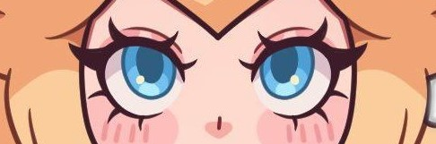
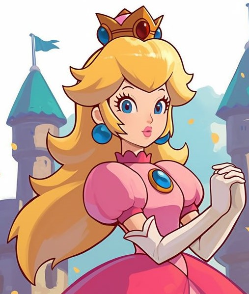
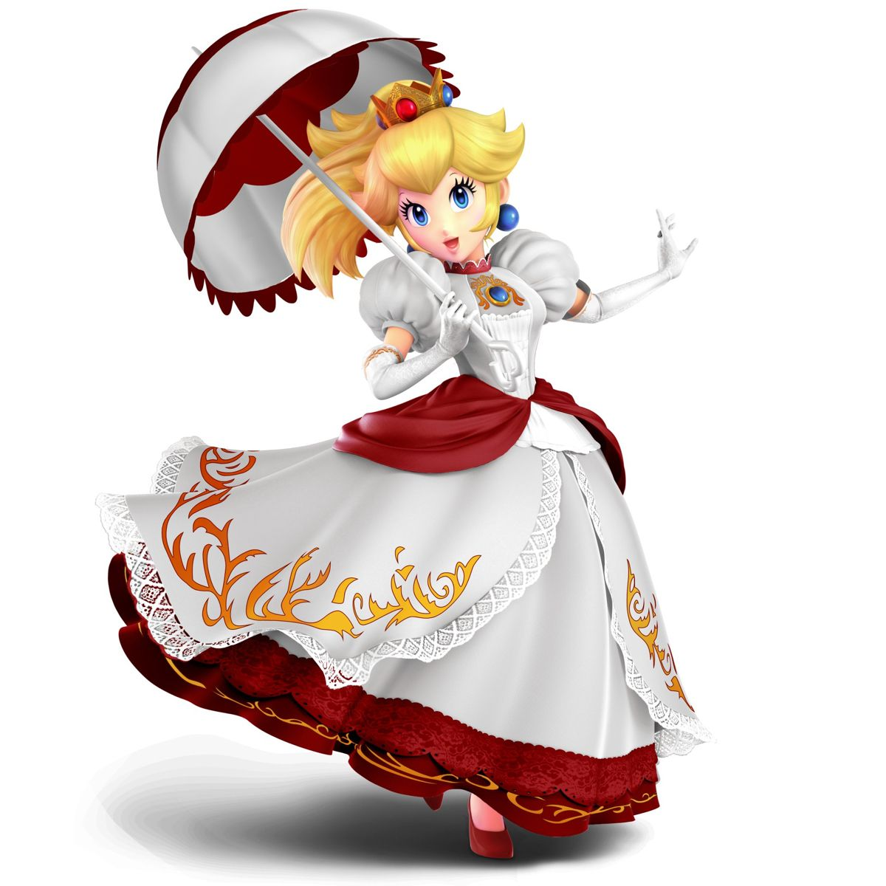

About.
Princess Peach is the princess of the Mushroom Kingdom,
known for her kind personality, her role as a damsel in distress,
and her active participation in various games and adventures,
alongside Mario and friends.
Age = Princess Peach's age is generally estimated to be around 25 years old
Gender = Female
Eyes color = Blue
Hair color = Blonde
Power =
Invincibility Power-Up:
One of Peach's most iconic powers comes from the invincibility star, which grants her
temporary invulnerability. During this time, she can defeat enemies effortlessly,
making her a powerful ally in challenging situations.
Heart Power:
Peach can weaponize her heart power, using it as projectiles to attack foes. These heart
projectiles can home in on targets and enhance her other abilities, showcasing
her magical potential beyond just physical strength.
Vibe Abilities:
In some games, Peach can draw energy from her surroundings to create concussive
shockwaves or vibe combos, demonstrating her versatility in combat.
Etc...
